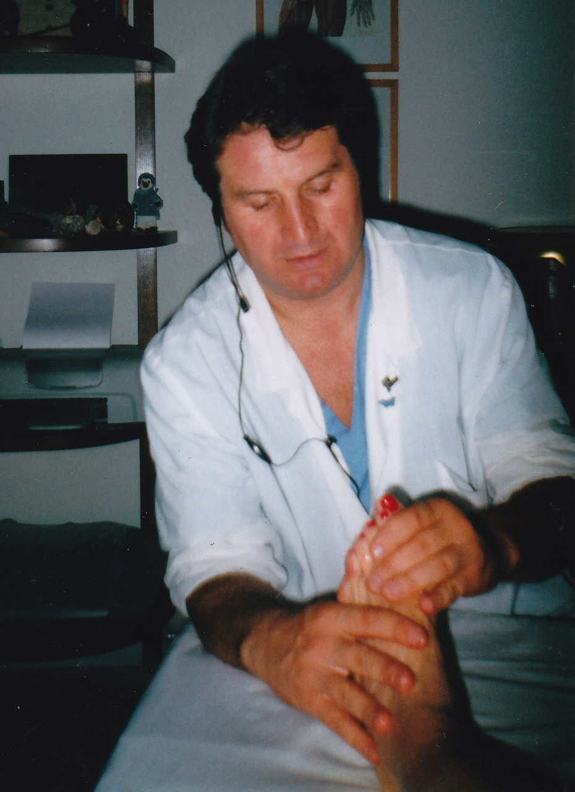
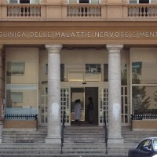

Giuseppe De Marchis Fisioterapista
Fisioterapista della riabilitazione
Giuseppe De Marchis è un fisioterapista specializzato nel trattamento dei pazienti con problemi neurologici di ogni tipo, ed in particolare affetti da Ictus Cerebrale, Paresi del Settimo Nervo Cranico e Sclerosi Laterale Amiotrofica. Presta servizio come referente in qualità di fisioterapista presso il Policlinico Umberto I di Roma. Riceve su appuntamento presso il suo studio privato di Sutri (VT) dove esegue trattamenti personalizzati per ogni esigenza di riabilitazione. Numerose sono le conferenze e i seminari in ambito riabilitativo che tiene ogni anno e che ha tenuto nel corso del suo percorso professionale.
Le migliori competenze riabilitative
I più aggiornati metodi di cura, sono a vostra disposizione grazie al costante aggiornamento e partecipazione attiva a seminari e convegni. Le migliori competenze per affrontare ogni singolo piano di riabilitazione eseguito dal dottor De Marchis
Sedute individuali con metodo personalizzato per singolo caso
Ogni caso viene trattato in maniera specifica e con un piano terapeutico individuale, atto a risolvere i deficit motori, sia a livello Neurologico, Muscolare e Cognitivo.
Riabilitazione da traumi ed infortuni, e cura dolori di postura
Si prende cura dei muscoli e dello scheletro, ed è in grado di aiutare il paziente a superare i dolori dovuti a traumi e infortuni o errori di postura.
Trattamento dei pazienti affetti da sclerosi laterale amiotrofica
Giuseppe De Marchis è referente, in qualità di fisioterapista, nella gestione dei pazienti affetti da sclerosi laterale amiotrofica presso il Dipartimento di Scienze Neurologiche del Policlinico Umberto I.
Riabilitazione da Ictus e Paresi Facciale Periferica
Lunga esperienza formativa coaudivata da vari seminari e la partecipazione a numerosi convegni come relatore, per il trattamento dell’Ictus in fase acuta e cronica e il trattamento della Paresi Facciale Periferica.
Attività Lavorativa
-
Presente2002
Fisioterapista presso il Policlinico Umberto I
E referente, in qualità di fisioterapista, nella gestione dei pazienti affetti da sclerosi laterale amiotrofica presso il Dipartimento di Scienze Neurologiche del Policlinico Umberto I.
-
20021996
Terapista della riabilitazione presso Policlinico Umberto I
Volontario con frequenza giornaliera presso il Dipartimento di Scienze Neurologiche l° e 2° Cattedra di Neurochirurgia del Policlinico Umberto I – Università degli Studi di Roma La Sapienza
-
19981998
Terapista della Riabilitazione - Università La Sapienza Roma
Consulente in qualità di Terapista della Riabilitazione, per la valutazione e piano di trattamento neuroriabilitativo, presso Ambulatorio Speciale Neurogenetica Clinica dell’istituto di Clinica delle Malattie Nervose e Mentali dell’Università degli Studi di Roma La Sapienza.
-
20021987
Istituto di clinica delle malattie Nervose e Mentali
Attività di volontariato certificato con frequenza giomaliera presso l’istituto di
Clinica delle Malattie Nervose e Mentali, divisione di Neurochirurgia, Dipartimento di Neurochirurgia-MaxilloFacciale.
Intervista ad Uno Mattina RAI 1

Lo studio
Via dell’Ospedale 17 · Sutri (VT)
- Via dell'ospedale 17 Sutri (VT)
- 0761.608950
- 335.6247854
Servizio di riabilitazione motoria presso Policlinico Umberto I - Clinica neurologica

- 06.49914702
Intervista a Rai Notte

Attività Didattica
-
Docente 2012
Promozione della salute e Sicurezza
Docente a contratto nel Corso di laurea in Fisioterapia, I anno II semestre, modulo: Scienze infermieristiche e tecniche neuropsichiatriche e riabilitative. Insegnamento: promozione della salute e sicurezza, presso Università degli Studi di Roma La Sapienza
-
Relatore 2011
Congresso nazionale FIMeG 2011
Relatore al II congresso Nazionale FIMeG - Educare alla vecchiaia: nuovi scenari tra geni, stili di vita e terapie, Roma (CNR)
-
Seminari 2004-2006
Tecniche di riabilitazione nel paziente con Parkinson / Tecniche di riabilitazione nel paziente con sindromi extrapiramidali
Seminari nell'ambito delle attività didattiche del I Master in Management del paziente geriatrico a rischio di disabilità o disabile, organizzato dal Dipartimento di Scienze dell'invecchiamento I° Clinica Medica, Policlinico Umberto I
-
Docente 2002-2003
Corso di Laurea in Fisioterapia
Docente a contratto nel Corso di Laurea in Fisioterapia III anno I semestre, Corso integrato di Geriatria, in Scienze Infermieristiche e Tecniche Neuropsichiatriche e Riabilitazione, presso Università degli Studi di Roma La Sapienza.
-
Docente 2002
Corso di Educazione nutrizionale ed alla postura
Nell'ambito del Progetto Salute 2002, organizzato dal Comune di Sutri (VT), in collaborazione con l'istituto comprensivo A. Moro di Sutri per i ragazzi delle Scuole Elementari e Medie.
-
Docente 2001
Corsi di aggiornamento per Terapisti
Corso monografico Neuroimmagini per terapisti... impariamo ad osservare ed interpretare... Accademia riabilitativa S.R.L., presso Aula Marconi del C.N.R. di Roma. Incarico in qualità di docente del Corso di Posizionamento a letto ed ortosizzazione del paziente neurologico presso il servizio di fisioterapia dell'Ospedale C.T.O.-U.O.C. di Roma formazione,aggiornamento e qualità.
-
Docente 2000
Corso di Metodologia fisica e riabilitativa
Docente di Metodologia fisica e riabilitativa nel Diploma universitario per Fisioterapista presso la II Facoltà di Medicina e Chirurgia dell'Università degli Studi di Roma La Sapienza, Azienda policlinico S. Andrea.
-
Docente 1998
Corso di Infermieristica clinica in igiene mentale
Docente a contratto, ai Sensi dell'art. 100 lett. D D.P.R. 382/80, per il Corso ufficiale di Infermieristica clinica in igiene mentale, presso il Diploma mmiversitario per Fisioterapista della Facoltà di Medicina e Chirurgia dell'Università degli Studi dell'Aquila.
-
Docente 1997
Corso di Medicina fisica e Riabilitativa
Docente di Medicina e fisica riabilitativa presso il Corso di Diploma Universitario di Fisioterapista (l° anno, 2° semestre) con sede presso l'Università degli Studi di Roma La Sapienza.
-
Insegnamento integrativo 1993-1996
Applicazioni strumentali in terapia fisica
Incarico, mediante contratto, per insegnamento integrativo al Corso ufficiale di Terapia strumentale dal titolo Applicazioni strumentali in terapia fisica, svoltosi presso la 2° Scuola diretta a fini speciali per Terapisti della Riabilitazione dell'Università degli Studi di Roma La Sapienza.
Domande frequenti
Chi è Giuseppe De Marchis?
Giuseppe De Marchis è un fisioterapista specializzato nel trattamento dei pazienti con problemi neurologici, in particolare ictus cerebrale, paresi del settimo nervo cranico e sclerosi laterale amiotrofica.
Di quali ambiti della riabilitazione si occupa?
Il percorso professionale comprende la riabilitazione da ictus in fase acuta e cronica, la paresi facciale periferica, le disabilità neurologiche e la riabilitazione motoria. Le attività sono descritte nelle sezioni del sito.
Dove si trova lo studio di Giuseppe De Marchis?
Lo studio privato si trova in Via dell’Ospedale 17 a Sutri, in provincia di Viterbo.
Come si richiede un appuntamento?
Per informazioni e appuntamenti è possibile chiamare il numero 0761.608950 oppure il cellulare 335.6247854. La pagina Contatti riporta il ricevimento dal lunedì al sabato, su appuntamento.
Dove posso trovare il curriculum e le apparizioni televisive?
Il curriculum completo è disponibile in PDF dal collegamento Download CV. La pagina Stampa e TV raccoglie i video delle apparizioni televisive; le sezioni Attività di ricerca e Attività di Formazione riportano gli elenchi cronologici.